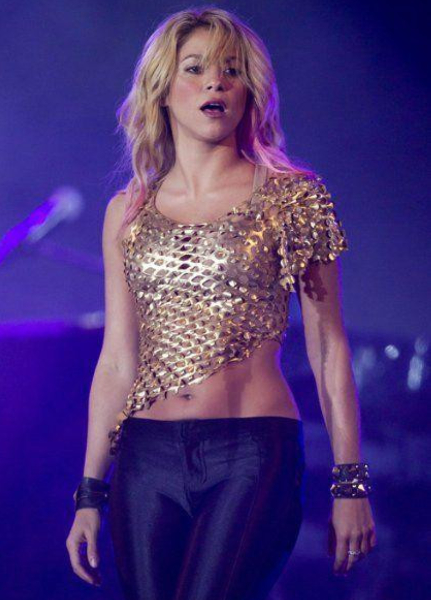

Feid es uno de los artistas más innovadores del género urbano, fusionando reguetón con pop y trap.
Su talento ha sido reconocido globalmente, trabajando con artistas como J Balvin y Karol G.
J Balvin
J Balvin es una leyenda moderna del reguetón, llevando su estilo innovador y tropical por todo el mundo.
Con éxitos como "Mi Gente" y colaboraciones con artistas globales, ha dejado huella en la música urbana.
Karol G
Karol G ha conquistado al mundo con su poderosa voz y estilo único. Con éxitos como "Tusa" y "Bichota",
ha demostrado ser una figura clave en la música urbana femenina.
Maluma
Maluma ha llegado a la cima de las listas con canciones como "Felices los 4" y "Hawái". Su carisma y
estilo único lo han consolidado como uno de los artistas más grandes del reguetón global.

Shakira
Shakira es una cantante y compositora colombiana, famosa por su estilo único que mezcla pop, reguetón y música latina, y por su impacto global en la música.
Manuel Turizo
Manuel Turizo es un cantante y compositor colombiano, conocido por su estilo en el reguetón y la música urbana, con un sonido fresco y romántico.